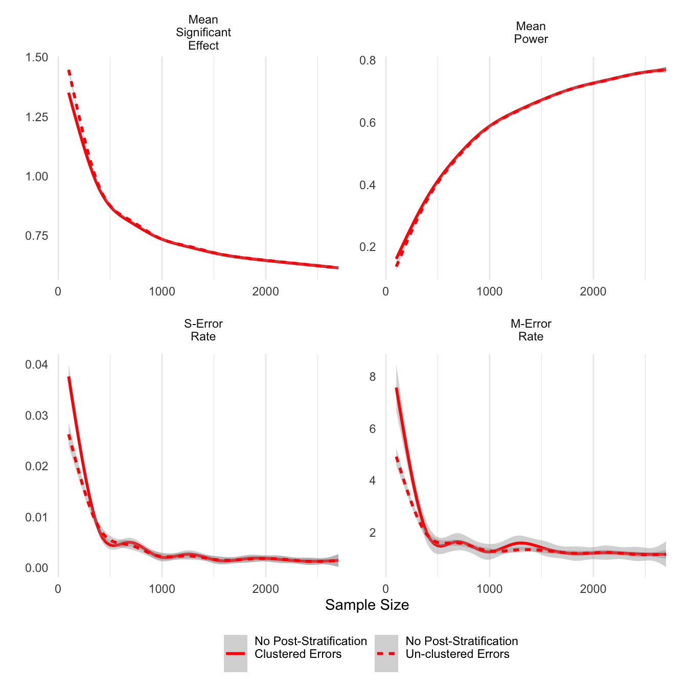
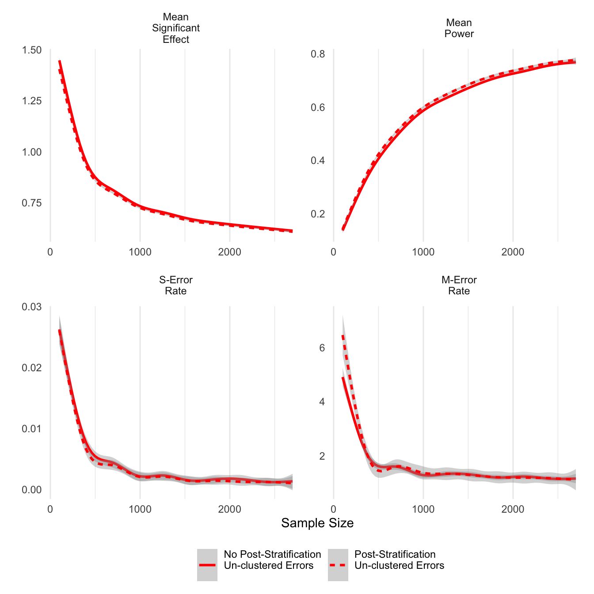
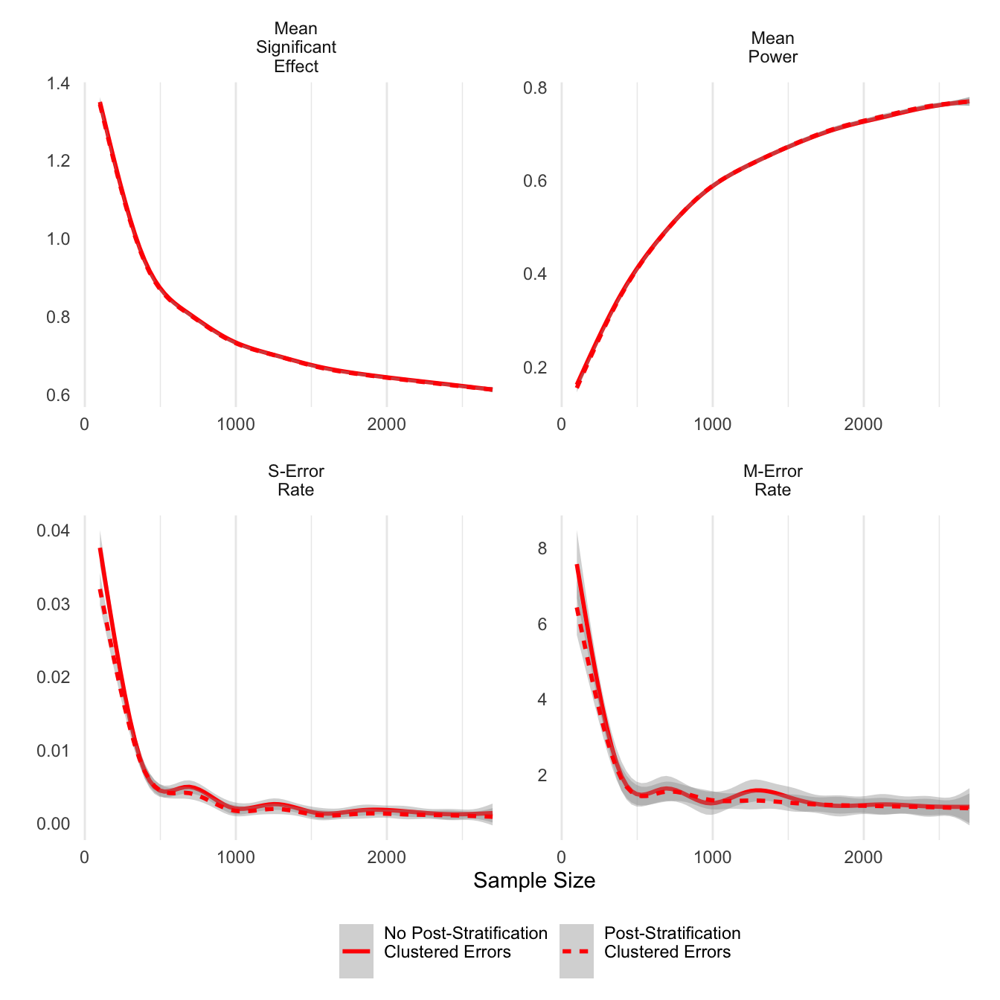
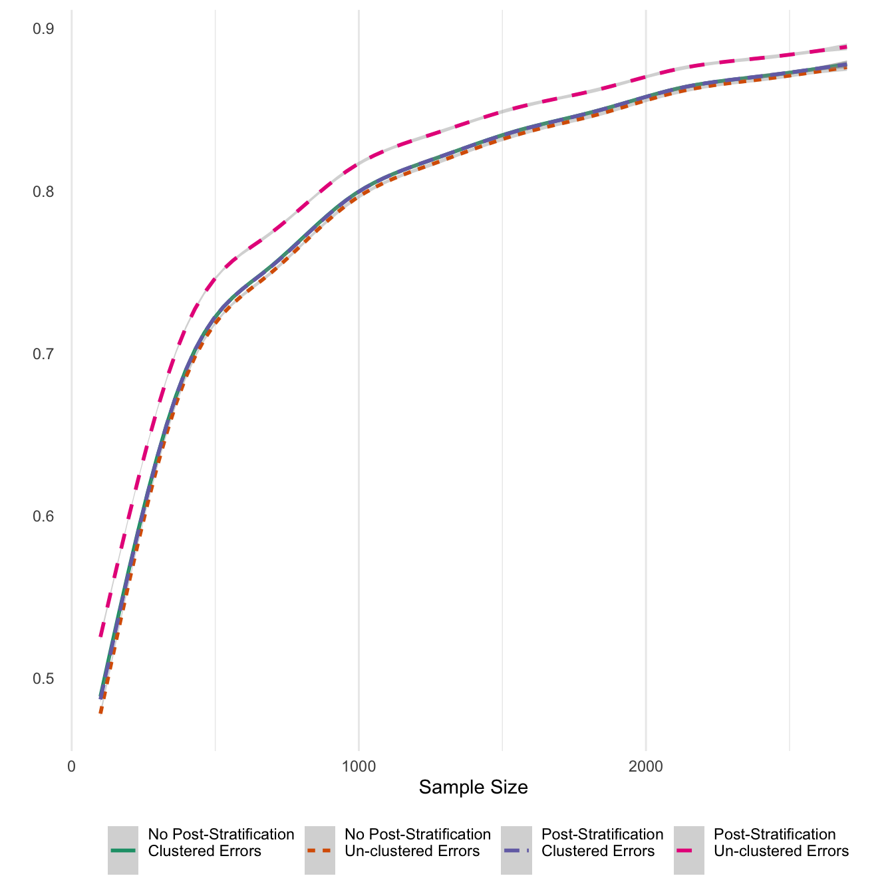

#Required packages
require(ggplot2)
require(dplyr)
require(tidyr)
require(multiwayvcov)
require(lmtest)
require(stringr)
require(kableExtra)
# package MASS also used but not loaded
# != Note this simulation uses a version of mclapply for windows. You must have R package parallelsugar installed to use it if you are running windows.
# to install parallelsugar:
# install.packages('devtools')
# library(devtools)
# install_github('nathanvan/parallelsugar')
# If using Windows, parallelfunc comes from parallesugar, otherwise the standard mclapply is used
if(.Platform$OS.type=='windows') {
parallelfunc <- parallelsugar::mclapply_socket
} else {
parallelfunc <- parallel::mclapply
}Background
Conjoint survey experiments have become more popular in political science since the publication of Hainmueller, Hopkins and Yamamoto (2014). However, analysis of the statistical of power of conjoint experiments is difficult using standard parametric techniques because of the use of multiple treatments, interaction effects and paired vignettes. To that end, I have conducted the following simulation experiment to demonstrate the statistical properties of the conjoint experiment for my online survey experiment “Politically-Connected Firms and the Military-Clientelist Complex in North Africa” (see SocArchiv Draft). I employ both traditional power measures and newer statistics from Gelman and Carlin (2014) reflecting inferential errors that are particularly apt for experiments in the social sciences.This simulation also incorporates measurement error in the treatment variable by using a hierarchical distribution for the conjoint treatment effects (i.e., heterogeneous treatments).
The original Rmarkdown and saved simulation files can be downloaded from the site’s Github.
The packages required to run this simulation are listed in the code block below:
Simulation Set-up
The following parameters control the range of coefficients tested and the number of simulations. The survey experiment design employs vignettes in which appeals and the actors making appeals are allowed to vary between respondents. Any one vignette has one actor and one appeal. The probability of assignment is assumed to be a simple random fraction of the number of appeal-actor combinations (14). If run_sim is set to TRUE, the simulation is run, otherwise the simulation results are loaded from an RDS file and plotted. Running the simulation will take approximately 6 to 12 hours depending on the number of cores and speed of the CPU.
#Actually run the simulation or just load the data and look at it?
run_sim <- FALSE
# Max number of respondents fixed at 2700
num_resp <- 2700
# Number of iterations (breaks in sample size)
num_breaks <- 300
# Number of simulations to run per iteration
n_sims <- 1000I then create a grid of all possible actor-appeal combinations as I am using simple randomization of profiles before presenting them to respondents. There are two vectors of treatments (actors and appeals) that each have 7 separate treatments for a total of 14 separate possible treatments.
# Two treatment variables producing a cross-product of 7x7
treatments1 <- c('military','MOI','president','MOJ','parliament','municipality','government')
treatments2 <- c('exprop.firm','exprop.income','permit.reg','contracts.supply','permit.export','permit.import','reforms')
total_treat <- length(c(treatments1,treatments2))
grid_pair <- as.matrix(expand.grid(treatments1,treatments2))
print(head(grid_pair)) Var1 Var2
[1,] "military" "exprop.firm"
[2,] "MOI" "exprop.firm"
[3,] "president" "exprop.firm"
[4,] "MOJ" "exprop.firm"
[5,] "parliament" "exprop.firm"
[6,] "municipality" "exprop.firm"Simulation
To simulate the data, I first sample 14 coefficients \(\beta_j\) (one for each treatment \(J\)) from a normal distribution with mean zero and standard deviation one. I then randomly sample from two profile combinations for each of the \(I\) respondents in accordance with simple random sampling. Two profile combinations, for a total of four tasks \(T\), are selected to reflect the fact that paired vignettes will be shown to each respondent as in the study design. I also sample a pre-treatment covariate \(Z_I\) that is a random binomial vector with probability of 0.2 (thus 20% of respondents will fall into this cell). A treatment interaction effect \(\beta_z\) is sampled from a normal distribution with mean 0.5 and standard deviation of 0.3 to provide a sampling distribution for the true effect, instead of assuming that the true effect is a fixed population value. Adding a distribution for \(\beta_j\) reflects additional uncertainty beyond standard sampling distribution uncertainty. In this case, it represents additional measurement error between the true concept and the indicators used in the survey design.
I also post-stratify some estimates with a pre-treatment covariate \(Q_I\) from a binomial distribution of probability .5 that has a constant effect on \(Y_{it}\) of \(+1\) (representing a fixed effect).
I then randomly sample a pair of outcomes, for a total of four tasks \(T\), for \(Y_{it}\) in the range of \([1,10]\) by drawing a number from a multivariate normal distribution. The mean \(\mu_{it}\) of this normal distribution is equal to a linear model with an intercept of 5, the 14 dummy variables for treatment indicators \(X_j\) with associated coefficients \(\beta_j\), the interaction \(\beta_z\) between the pre-treatment covariate \(Z_i\) and \(X_{ij}\), and a post-stratification covariate \(Q_i\). To simplify matters, \(Z_i\) is not given its own constituent term as I am not interested in the unconditional effect of \(Z_i\) on \(Y_{it}\), only the effect of \(X_{ijt}\) on \(Y_{it}\) given \(Z_{i}\). Finally, I draw correlated errors from a multivariate normal distribution with mean of zero and length of 4 (equal to the number of tasks per respondent) to produce a \(4 \times 4\) variance matrix \(\varSigma_i\) with a diagonal of 4 and intra-respondent covariation of 1 (correlation of 0.5).
\[ \begin{aligned} X_{ITJ} &\sim \mathrm{B} \Big( \frac{1}{J \times 2} \Big)\\ B_{J} &\sim \mathrm{N}(0,2)\\ \beta_z &\sim \mathrm{N}(0.5,0.3)\\ Z_I &\sim \mathrm{B}(0.2)\\ Q_I &\sim \mathrm{B}(0.5)\\ \mu_{it} &= 5 + \sum_{j=1}^{J} \sum_{t=1}^{T} \beta_j * X_{itj} + \beta_z * X_{it1} *Z_i + Q_i\\ Y_{it} &\sim \mathrm{N}(\mu_{it},\varSigma_i) \end{aligned} \]
This process will produce some numbers outside the \([1,10]\) range; however, it is better to leave these values in as explicit truncation will violate the assumptions of the underlying causal model.
I run 1000 simulations for each of 300 sequential sample sizes ranging from 100 to 2700. I then take the mean significant effect and report that as the likely significant effect size for that sample size. I also record the ratio of draws for which the effect is significant (the power). However, given that the true effect is not fixed, I interpret power as the ability detect a true effect greater than zero. I record both unadjusted p-values and p-values adjusted using the cluster.vcov function from the multiwayvcov package by clustering around respondent ID to reflect the pairing of vignettes. I also use separate results when post-stratifying on a pre-treatment covariate \(Q_I\).
In addition, I included M-errors (error of absolute magnitude of significant coefficients) and S-errors (incorrect sign of significant coefficients). M-errors provide an estimate of publication bias given that the \(p=0.05\) threshold is a hard boundary and will necessarily result in smaller effects being reported as statistically insignificant when in fact they are greater than zero. S-errors help determine the probability that an estimated effect is the correct sign even if it is significant. S-errors are particularly problematic in small samples when sampling error can produce large negative deviations that may be statistically significant.
if(run_sim==TRUE) {
file.create('output_log.txt',showWarnings = FALSE)
# Need to randomize over the simulations so that parallelization works correctly on windows
sampled_seq <- sample(seq(100,num_resp,length.out = num_breaks))
all_sims <- parallelfunc(sampled_seq,function(x) {
out_probs <- 1:n_sims
cat(paste0("Now running simulation on data sample size ",x),file='output_log.txt',sep='\n',append=TRUE)
out_data <- lapply(1:n_sims, function(j) {
total_probs <- sapply(1:x,function(x) {
treat_rows <- sample(1:nrow(grid_pair),4)
treatments_indiv <- c(grid_pair[treat_rows,])
return(treatments_indiv)
})
by_resp <- t(total_probs)
by_resp <- as_data_frame(by_resp)
names(by_resp) <- c(paste0('actor.',1:4,"_cluster",c(1,1,2,2)),paste0('gift.',1:4,"_cluster",c(1,1,2,2)))
by_resp$respondent <- paste0('Respondent_',1:nrow(by_resp))
by_resp <- gather(by_resp,attribute,indicator,-respondent) %>% separate(attribute,into=c('attribute','cluster'),sep='_') %>%
separate(attribute,into=c('attribute','task')) %>% spread(attribute,indicator)
# Assign true coefficients for treatments
#Beta_js
coefs <- data_frame(coef_val=rnorm(n=length(c(treatments1,treatments2)),mean=0,sd=1),
treat_label=c(treatments1,treatments2))
# Create cluster covariance in the errors
sigma_matrix <- matrix(2,nrow=4,ncol=4)
diag(sigma_matrix) <- 4
# Add on the outcome as a normal draw, treatment coefficients, interaction coefficient, group errors/interaction by respondent
by_resp <- gather(by_resp,treatment,appeal_type,actor,gift) %>%
left_join(coefs,by=c('appeal_type'='treat_label'))
# Record interaction coefficient (true estimate of interest)
true_effect <- rnorm(n=1,mean=0.5,sd=0.3)
by_resp <- select(by_resp,-treatment) %>% spread(appeal_type,coef_val) %>% group_by(respondent) %>% mutate(error=MASS::mvrnorm(1,mu=rep(0,4),Sigma=sigma_matrix)) %>% ungroup
# interaction coefficient only in function if military==TRUE
by_resp <- mutate(by_resp,int_coef=true_effect*rbinom(n = n(),prob = 0.2,size=1),
int_coef=if_else(military!=0,int_coef,0))
by_resp <- lapply(by_resp, function(x) {
if(is.double(x)) {
x[is.na(x)] <- 0
}
return(x)
}) %>% as_data_frame
# To make the outcome, need to turn the dataset long
# However, we now need to drop the reference categories
# Drop one dummy from actor/gift to prevent multicollinearity = reforms + government combination
out_var <- gather(by_resp,var_name,var_value,-respondent,-task,-cluster) %>%
filter(!(var_name %in% c('reforms','government'))) %>%
group_by(respondent,task) %>% summarize(outcome=sum(var_value)+5)
combined_data <- left_join(out_var,by_resp,by=c('respondent','task'))
# Re-estimate with a blocking variable
combined_data$Q <- c(rep(1,floor(nrow(combined_data)/2)),
rep(0,ceiling(nrow(combined_data)/2)))
combined_data$outcome <- if_else(combined_data$Q==1,combined_data$outcome+1,
combined_data$outcome)
# # Create data predictor matrix and estimate coefficients from the simulated dataset
#
to_lm <- ungroup(combined_data) %>% select(contracts.supply:reforms,int_coef,Q)
to_lm <- mutate_all(to_lm,funs(if_else(.!=0,1,.))) %>% mutate(outcome=combined_data$outcome)
#No post-stratification
# I don't estimate a constituent term for int_coef because it is assumed to be zero
results <- lm(outcome~contracts.supply + exprop.firm + exprop.income + military + MOI + MOJ + municipality +
parliament + permit.export + permit.import + permit.reg + president +
int_coef:military,data=to_lm)
results_clust <- cluster.vcov(results,cluster = combined_data$respondent)
pvals_adj <- coeftest(results,vcov.=results_clust)[-1,4]<0.05
pvals_orig <- coeftest(results)[-1,4]<0.05
total_sig_orig <- mean(pvals_orig)
total_sig_adj <- mean(pvals_adj)
int_sig_orig <- pvals_orig['military:int_coef']
int_sig_adj <- pvals_adj['military:int_coef']
# Now run the poststratification model
results_ps <- lm(outcome~contracts.supply + exprop.firm + exprop.income + military + MOI + MOJ + municipality +
parliament + permit.export + permit.import + permit.reg + president +
int_coef:military + Q,data=to_lm)
results_clust <- cluster.vcov(results,cluster = combined_data$respondent)
pvals_adj <- coeftest(results_ps,vcov.=results_clust)[-1,4]<0.05
pvals_orig <- coeftest(results_ps)[-1,4]<0.05
total_sig_orig_blocker <- mean(pvals_orig)
total_sig_adj_blocker <- mean(pvals_adj)
int_sig_orig_blocker <- pvals_orig['military:int_coef']
int_sig_adj_blocker <- pvals_adj['military:int_coef']
out_results <- data_frame(int_sig_adj,int_sig_orig,int_sig_adj_blocker,int_sig_orig_blocker,
total_sig_adj,total_sig_orig,total_sig_adj_blocker,
total_sig_orig_blocker,abs_true_effect=abs(true_effect),
true_effect=true_effect,
est_effect=coef(results)['military:int_coef'],
est_effect_ps=coef(results)['military:int_coef'])
})
out_data <- bind_rows(out_data)
return(out_data)
},mc.cores=parallel::detectCores(),mc.preschedule=FALSE)
#save the data for inspection
all_sims_data <- bind_rows(all_sims) %>% mutate(sample_size=rep(sampled_seq,each=n_sims),
iter=rep(1:n_sims,times=num_breaks))
}
if(run_sim==TRUE) {
saveRDS(object = all_sims_data,file='all_sims_data.rds')
} else {
all_sims_data <- readRDS('all_sims_data.rds')
}This simulation yields a row with the significant effect of the interaction term for that simulation for a total of n_sims draws. From this raw data I am able to calculate all of the necessary statistics mentioned above.
# add in different calculations
all_sims_data <- group_by(all_sims_data,sample_size) %>% mutate(sigeffVorig=ifelse(int_sig_orig,
est_effect,
NA),
sigeffVadj=ifelse(int_sig_adj,est_effect,NA),
sigeffVps_orig=ifelse(int_sig_orig_blocker,est_effect_ps,NA),
sigeffVps_adj=ifelse(int_sig_adj_blocker,est_effect_ps,NA),
powerVorig=int_sig_orig & (true_effect>0),
powerVadj=int_sig_adj & (true_effect>0),
powerVps_orig=int_sig_orig_blocker & (true_effect > 0),
powerVps_adj=int_sig_adj_blocker & (true_effect > 0),
SerrVorig=ifelse(int_sig_orig,1-(sign(est_effect)==sign(true_effect)),NA),
SerrVadj=ifelse(int_sig_adj,1-(sign(est_effect)==sign(true_effect)),NA),
SerrVps_orig=ifelse(int_sig_orig_blocker,
1-(sign(est_effect_ps)==sign(true_effect)),NA),
SerrVps_adj=ifelse(int_sig_adj_blocker,
1-(sign(est_effect_ps)==sign(true_effect)),NA),
MerrVorig=ifelse(int_sig_orig,abs(est_effect)/abs_true_effect,NA),
MerrVadj=ifelse(int_sig_adj,abs(est_effect)/abs_true_effect,NA),
MerrVps_orig=ifelse(int_sig_orig_blocker,abs(est_effect_ps)/abs_true_effect,NA),
MerrVps_adj=ifelse(int_sig_adj_blocker,abs(est_effect_ps)/abs_true_effect,NA))
long_data <- select(all_sims_data,matches('V|sample|iter')) %>% gather(effect_type,result,-sample_size,-iter) %>% separate(effect_type,into=c('estimate','estimation'),sep='V') %>%
mutate(estimate=factor(estimate,levels=c('sigeff','power','Serr','Merr'),
labels=c('Mean\nSignificant\nEffect',
'Mean\nPower',
'S-Error\nRate',
'M-Error\nRate')),
estimation=factor(estimation,levels=c('adj','orig','ps_adj','ps_orig'),
labels=c('No Post-Stratification\nClustered Errors\n',
'No Post-Stratification\nUn-clustered Errors\n',
'Post-Stratification\nClustered Errors\n',
'Post-Stratification\nUn-clustered Errors\n')))
long_data_treatment <- select(all_sims_data,matches('total|iter|sample')) %>% gather(effect_type,result,-sample_size,-iter) %>%
mutate(effect_type=factor(effect_type,levels=c('total_sig_adj',
'total_sig_orig',
'total_sig_adj_blocker',
'total_sig_orig_blocker'),
labels=c('No Post-Stratification\nClustered Errors\n',
'No Post-Stratification\nUn-clustered Errors\n',
'Post-Stratification\nClustered Errors\n',
'Post-Stratification\nUn-clustered Errors\n')))
# Plot a sample of the data (too big to display all of it)
long_data %>% ungroup %>%
slice(1:10) %>%
select(-estimation) %>%
mutate(estimate=str_replace(estimate,"\\n"," ")) %>%
knitr::kable(.) %>%
kable_styling(font_size = 8)| sample_size | iter | estimate | result |
|---|---|---|---|
| 1334.783 | 1 | Mean Significant Effect | 0.6298429 |
| 1334.783 | 2 | Mean Significant Effect | 0.3874088 |
| 1334.783 | 3 | Mean Significant Effect | NA |
| 1334.783 | 4 | Mean Significant Effect | 1.1438379 |
| 1334.783 | 5 | Mean Significant Effect | 0.5653086 |
| 1334.783 | 6 | Mean Significant Effect | 1.2689594 |
| 1334.783 | 7 | Mean Significant Effect | NA |
| 1334.783 | 8 | Mean Significant Effect | NA |
| 1334.783 | 9 | Mean Significant Effect | NA |
| 1334.783 | 10 | Mean Significant Effect | NA |
Plotting
I use the gam function in the ggplot2 package to plot a smoothed regression line of the simulation draws for each sample size.
First we can look at the difference that clustered errors makes across the different statistics. The only noticeable differences are at sample sizes smaller than 500. Clustering on respondents tends to result in smaller average significant effects, but it also results in increases in sign errors. This finding differs from the literature that considers clustering important to control for intra-respondent correlation, which in this simulation was fixed at 0.5. At sample sizes larger than 500, there does not appear to be any difference between clustered and un-clustered estimates.
g_title <- guide_legend(title='')
filter(long_data,grepl('No Post',estimation)) %>% ggplot(aes(y=result,x=sample_size,linetype=estimation)) +
theme_minimal() + stat_smooth(colour='red') +
xlab('Sample Size') + ylab("") +
facet_wrap(~estimate,scales='free') + theme(panel.grid.minor.y = element_blank(),
panel.grid.major.y = element_blank()) +
scale_color_brewer(palette='Accent') + guides(colour=g_title,linetype=g_title) +
theme(legend.position = 'bottom')
ggsave('clust_err.png',units='in',width=6)Next I look at post-stratification as an option to improve the precision of estimates. For unclustered errors reported below, post-stratified estimates do have higher power and slightly lower average significant effects, and importantly, the post-stratified estimates worsen neither type S nor type M errors.
g_title <- guide_legend(title='')
filter(long_data,grepl('Un-clustered',estimation)) %>% ggplot(aes(y=result,x=sample_size,linetype=estimation)) +
theme_minimal() + stat_smooth(colour='red') +
xlab('Sample Size') + ylab("") +
facet_wrap(~estimate,scales='free') + theme(panel.grid.minor.y = element_blank(),
panel.grid.major.y = element_blank()) +
scale_color_brewer(palette='Accent') + guides(colour=g_title,linetype=g_title) +
theme(legend.position = 'bottom')
ggsave('post_unclust_err.png',units='in',width=6)Post-stratification appears to have a similar effect on clustered error estimations, although the differences are smaller. In smaller samples, post-stratified estimates do have smaller M-errors.
g_title <- guide_legend(title='')
filter(long_data,!grepl('Un-clustered',estimation)) %>% ggplot(aes(y=result,x=sample_size,linetype=estimation)) +
theme_minimal() + stat_smooth(colour='red') +
xlab('Sample Size') + ylab("") +
facet_wrap(~estimate,scales='free') + theme(panel.grid.minor.y = element_blank(),
panel.grid.major.y = element_blank()) +
scale_color_brewer(palette='Accent') + guides(colour=g_title,linetype=g_title) +
theme(legend.position = 'bottom')
ggsave('post_clust_err.png',units='in',width=6)Finally, I also report average numbers of significant coefficients for the 14 treatments. Given that the 14 treatments were sampled from a normal distribution with prior density in the positive values with a meaan of 0.5, in expectation 95% of estimates should be statisticall significant. While that upper limit is reached only in high sample numbers, it looks like the ratio for treatment effects reaches an acceptable level of 70 percent at about 500 sample respondents. Also, post-stratifying un-clustered models results in effects that are reported as significant at much higher rates, as would follow from the previous results about post-stratification.
g_title <- guide_legend(title='')
ggplot(long_data_treatment,aes(y=result,x=sample_size,linetype=effect_type,colour=effect_type)) +
theme_minimal() + stat_smooth() +
xlab('Sample Size') + ylab("") +
theme(panel.grid.minor.y = element_blank(),
panel.grid.major.y = element_blank()) +
scale_color_brewer(palette='Dark2') + guides(linetype=g_title,colour=g_title) +
theme(legend.position = 'bottom')
ggsave('all_treat_rate.png',units='in',width=6)Conclusion
This simulation study shows that a sample size of approximately 1,000 respondents is enough to obtain high power while also lowering both the S and M-error rates for treatment interaction effects in this conjoint experiment. The treatment effects themselves are generally of high quality once the sample size reaches 500 because the total number of respondents in each treatment cell is considerably higher than in an interaction. Post-stratification appears to be a useful strategy to increase precision without inducing S or M errors; at the very least, post-stratification does not appear to have any adverse effects on the estimation.
On the other hand, it appears that clustering errors increases the S-error rate at small sample sizes, a surprising finding considering that clustering methods are designed to inflate, not deflate, standard errors. Given that the S-error rate reveals the likelihood of making an error about the sign of the treatment effect, this is a potentially serious problem. For that reason I intend to report both clustered and un-clustered estimates in my analysis.